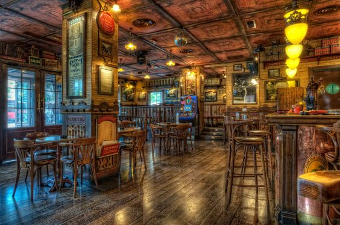
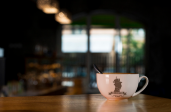
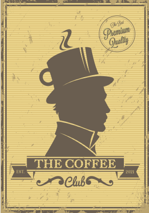

QUÉ OFRECE THE COFFEE CLUB
The Coffee Club será un lugar agradable y distinguido donde poder degustar un café. Estará ambientado con decoración vintage y mobiliario de los años 60 y 70. Queremos ofrecer una experiencia totalmente diferente a nuestra clientela y para ello nos apoyaremos en dos pilares fundamentales: café ecológico y los baristas.

CAFÉ ECOLÓGICO
La elección de ofertar este producto es por varios aspectos principalmente; porque proteges el medio ambiente, porque es bueno para tu salud, por su calidad y sobre todo porque ayudas al desarrollo de las regiones de origen.
Actualmente los países que más café ecológico consumen son: EEUU, Alemania, Bélgica, Suecia y Canadá.
LOS BARISTAS
Nuestro segundo pilar sobre el que apoyar la experiencia ofrecida al consumidor son los baristas. Es un profe- sional de la hostelería cuya misión es elaborar el café y servirlo de una forma impecable al cliente. Conoce todos los tipos de café y sus procesos de elaboración para obtener el sabor óptimo.

Cada taza de café preparada por el barista se convierte en una pequeña obra de arte ya que podrá decorar la taza de café con el denominado latte arte. El barista se encarga de servir el café al cliente y explicarle con todo lujo de detalle y un trato exquisito, el tipo de café elegido, procedencia del grano, proceso de tueste, propiedades, etc. para que su experiencia sea completa.
LA TIENDA
The Coffee Club entiende perfectamente que el mundo en el que vivimos es un mundo que no para. No todas las personas tienen un momento para relajarse en nuestro local, por lo que ofrecemos a nuestra clientela la posibilidad de comprar café para llevar sin perder ni un ápice el sabor y la calidad que ofrecemos.
